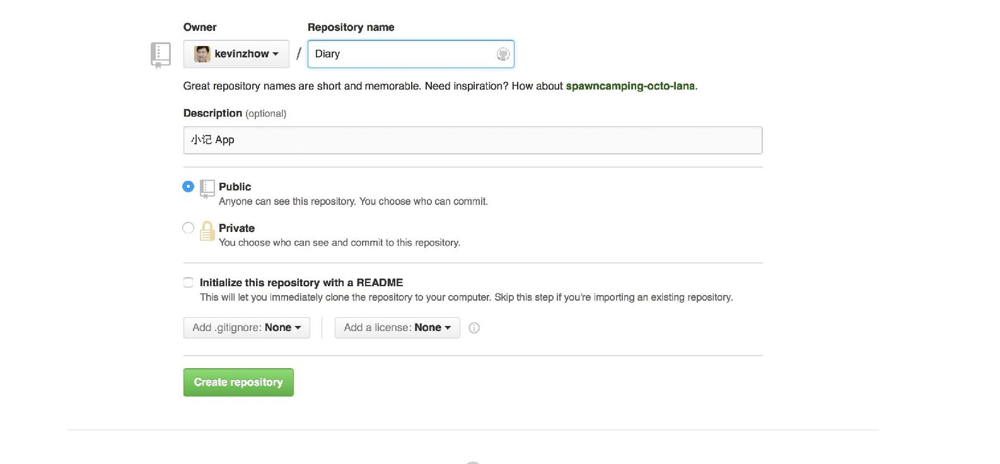
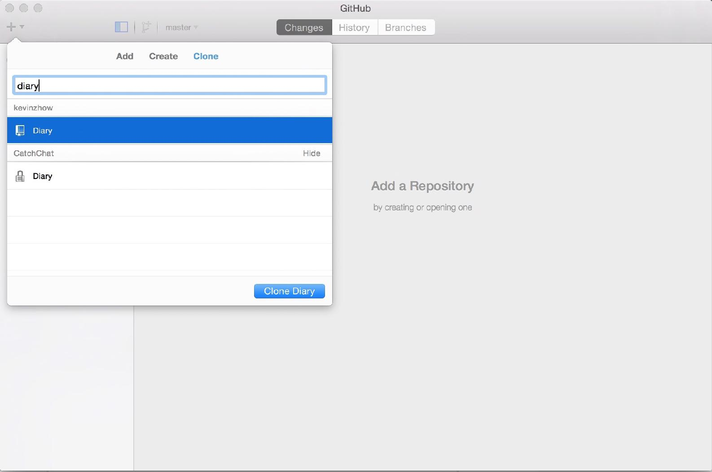
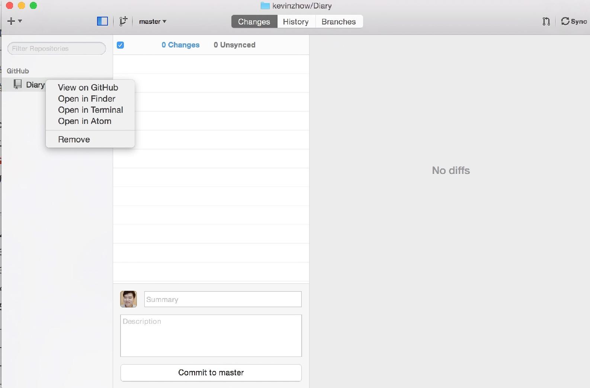
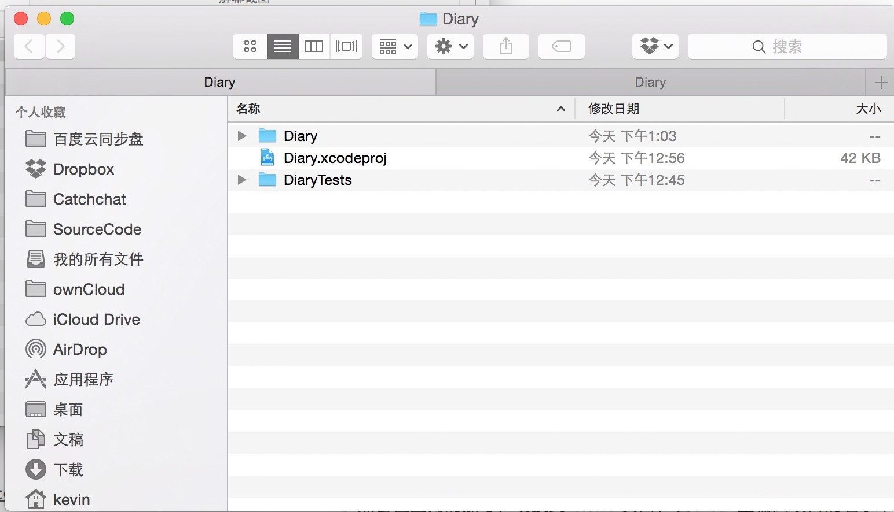
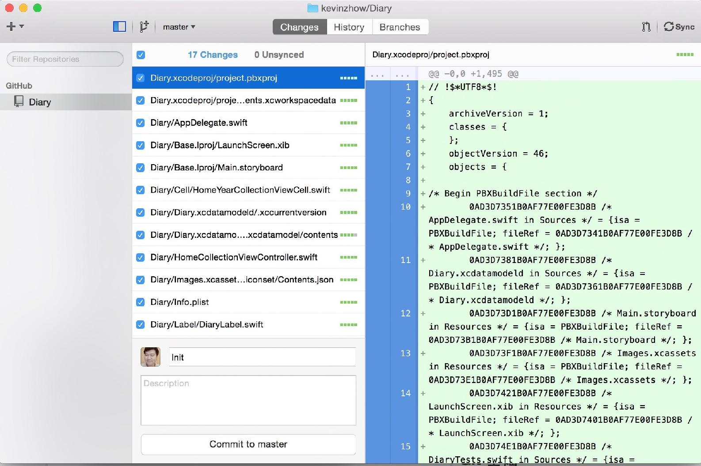
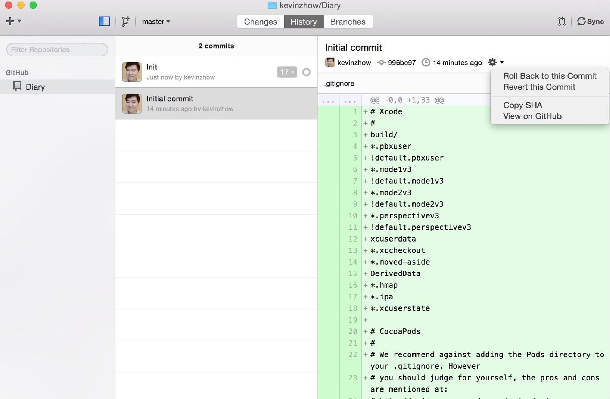

可能你已经迫不及待要进行下一部分的开发了，但是且慢！有一件很重要的事情此时需要你来做一下——用 Git 管理你的代码。
Git 是由 Linux 之父 Linus Tovalds 为了更好地管理linux内核开发而创立的分布式版本控制／软件配置管理软件。
简单来说，Git 是一个管理你的代码的历史记录的工具。
在很久很久以前，管理代码的方式曾经非常老土，就是通过复制文件夹到不同的地方来备份，管理不同的版本——你是不是这么干过？
从 Git 开始你就可以摆脱丢代码、寻找历史记录这些麻烦了，到 Github / Gitcafe 注册你的账号，立刻步入现代化！
对于新手来说，使用 Github 的 Mac 客户端 安全又便捷，快下一个。
以 Github 为例，点击右上角的加号添加新项目

完成这步之后，就可以在刚安装的客户端上登录你的账号，一路 continue 之后，进入主界面。
点击左上角的加号，切换到 Clone 页面，在 filter 里输入项目的名字来定位到我们的仓库。

点击 Clone Diary 把仓库克隆到我们本地。
Git 有着诸多优秀的特性，不过对于新手来说，有一个对你特别有用，就是可以随时还原到某一个你提交的版本。
在仓库上右键，Open in Finder，发现里面是空的，没关系，把我们刚刚完成的项目复制进来


返回到 Github 的客户端，可以看到 App 已经开始询问我们是否把这些新文件提交到仓库里。

在 Summary 里输入本次提交的内容，然后潇洒的点击 commit to master，就可以提交上去了。
完成之后，你的代码就在本地和服务器上都有了版本控制的功能。
版本控制怎么使用呢？
点击 History
选择我们最早的 Initial commit 那时候我们还没有提交任何内容，点击右边的齿轮，选择 roll back to this commit

此时你再打开 Finder 就会发现所有文件都不见了，因为在那个时间点上，我们没有任何文件。
放心，你的文件不会丢失，在 Init 这条纪录上重复刚才的 roll back to this commit，你的文件就又都回来了。
如果你想挑战一下难度，也可以选择命令行。
首先你需要安装 Homebrew
ruby -e "$(curl -fsSL https://raw.githubusercontent.com/Homebrew/install/master/install)"
然后运行
brew install git
接下里你需要配置你的 Git 信息
git config --global user.name "YOUR NAME"
git config --global user.email "YOUR EMAIL ADDRESS"
进入项目目录
git init
这时你的项目就处在 Git 的管理之下了。
使用
git add FILE_NAME
来将需要追踪的文件加入到 Git 里。
如果你希望追踪所有文件，那么可以使用
git add .
这个命令来实现。
使用
git commit -a
这个命令会先让你 Review 下变动，输入 Summary 内容就可以完成确认。如果你是个新手，可能此时命令行的编辑器该怎么用都已经把你搞晕了。
哎，我真是太坏了，为什么要把你领进命令行？嗯，其实知识想告诉你，还存在这么一个只有字符界面的世界，有兴趣的话，不妨了解一下。
此时你只是在本地，要提交到云端，还需要几步设置，不过既然 Github 客户端可以如此简单地完成这些事情，我们还是先去用客户端吧！